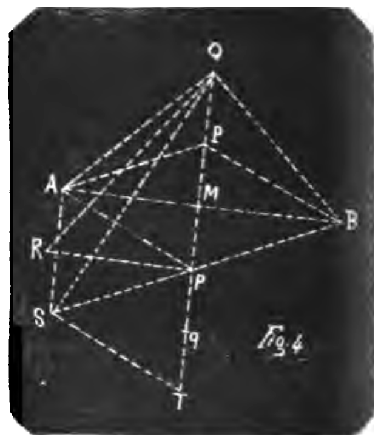
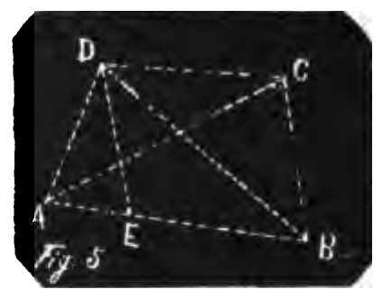

§§ 15–22: Identità metriche dei triangoli isosceli e delle corde¶
f. 0044 · p. 1515. Cor. Sarà dunque \((QM)^2 = (AQ)^2 - (AM)^2\) (47, lib. I).
16. Lemma. Stanti le stesse cose del § 13, sarà \((AQ)^2 = (AP)^2 + (PQ)^2 + Pp \cdot PQ\).
Dim. Poichè è \((AQ)^2 = (AP)^2 + (PQ)^2 + 2MP \cdot PQ\) (12, lib. II). Ma è \(2MP = Pp\) (§ 14). Dunque ecc.
17. Lemma. Sarà pure \((AQ)^2 = (Ap)^2 + (pQ)^2 - pP \cdot pQ\).
Dim. Poichè è \((AQ)^2 = (Ap)^2 + (pQ)^2 - 2pM \cdot pQ\) (13, lib. II). Ma è \(2pM = pP\) (§ 14). Dunque ecc.
18. Cor. I. Essendo \(pQ = pP + PQ\); sarà \((pQ)^2 = pP \cdot pQ + PQ \cdot pQ\) (2, lib. II); quindi sottraendo \(pP \cdot pQ\) si ha \((pQ)^2 - pP \cdot pQ = PQ \cdot pQ\). E fatta la sostituzione di questo valore nel valore di \((AQ)^2\) del § 17, si avrà \((AQ)^2 = (Ap)^2 + pQ \cdot PQ\). Donde sottraendo di qua e di là \((Ap)^2\), nasce \((AQ)^2 - (Ap)^2 = pQ \cdot PQ\). Se ora si eseguisca la moltiplicazione di \(AQ + Ap\) per \(AQ - Ap\); si troverà \((AQ + Ap)(AQ - Ap) = (AQ)^2 - (Ap)^2\). Quindi si avrà \((AQ + Ap)(AQ - Ap) = pQ \cdot PQ\). Donde per la 16, lib. VI si deduce l’analogia
ossia sostituendo \(AP\) in luogo di \(Ap\), e invertendo alternativamente
Da queste due analogie vien espresso il celebre
Teor. In qualunque triangolo un lato qualunque stà alla somma degli altri due, come la loro differenza stà alla differenza o alla somma de’ segmenti, che fa su quel lato la perpendicolare condotta dall’angolo opposto, secondo che essa cade dentro o fuori del triangolo.
19. Cor. II. Se sarà \(AQ = pQ\); tolti di qua e di là i due
f. 0045 · p. 16termini eguali \((AQ)^2\), \((pQ)^2\), e aggiungendo d’ambe le parti \(pP \cdot pQ\); risulterà \(pP \cdot pQ = (Ap)^2\).
20. Lemma. Stanti le stesse cose (§ 13), se sia retto l’angolo \(RpQ\); sia poi l’angolo \(RpS = RpA\); e \(pS = pR = pA\); sarà \(AS\) parallela ed eguale alla \(Pp\): e sarà \((AQ)^2 = (RQ)^2 - AS \cdot pQ\).


Dim. Poichè se dai due angoli retti \(RpQ\), \(Rpq\) (fig. 4) si sottraggono i due eguali \(RpA\), \(RpS\); rimarranno eguali gli angoli \(ApP\), \(Spq\). Ma \(ApP = APp\) (5, lib. I). Dunque \(Spq = APq\). Dunque \(AP\), \(Sp\) sono parallele (29, lib. I). Ma sono anche eguali per costruzione. Dunque le due \(AS\), \(Pp\) sono eguali e parallele (33, lib. I).
Si ha poi \((RQ)^2 = (Rp)^2 + (pQ)^2\) (47, lib. I) \(= (Ap)^2 + (pQ)^2\). E pel Lemma § 17, \((AQ)^2 = (Ap)^2 + (pQ)^2 - pP \cdot pQ\). Dunque \((AQ)^2 = (RQ)^2 - pP \cdot pQ\), ossia \(= (RQ)^2 - AS \cdot pQ\).
21. Lemma. Stanti le stesse cose (§§ 13 e 20) sarà \((SQ)^2 = (RQ)^2 + AS \cdot pQ\) (fig. 4).
Dim. Poichè se si faccia \(ST = Sp\); \(pT = pP\) (§ 1); nei due triangoli \(SpT\), \(APp\) si troveranno tra loro eguali gli angoli \(SpT\), \(APp\) (8, lib. I); e però \(PpT\) retta (27, lib. I). Sarà poi \((SQ)^2 = (pS)^2 + (pQ)^2 + pQ \cdot pT\) (§ 16). Ma è \((pS)^2 + (pQ)^2 = (pR)^2 + (pQ)^2 = (RQ)^2\); ed è \(pT = pP = AS\). Dunque \((SQ)^2 = (RQ)^2 + AS \cdot pQ\).
Dai due Lemmi precedenti segue per Corollario essere \((AQ)^2 + (SQ)^2 = 2(RQ)^2\).
22. Lemma. Se sarà \(AQ = pQ = BQ\) (fig. 4); e \(Ap = pB = pS\), essendo \(pS\) sulla continuazione della \(Bp\); sarà \(AS \cdot pQ = (Ap)^2\).
Dim. Avendo i triangoli isosceli \(AQp\), \(BQp\) i lati eguali tra loro; sarà l’angolo \(QpA = QpB\) (8, lib. I). Sarà poi l’angolo \(ApB\), che è la somma dei due, eguale anche alla somma de’ due angoli \(SAp\), \(ASp\) (32, lib. I), i quali essendo eguali
f. 0046 · p. 17tra loro per essere isoscele il triangolo \(ApS\) (5, lib. I); sarà ciascuno d’essi eguale all’angolo \(ApQ = pAQ\) (5, lib. I). Sarà dunque il triangolo \(pAS\) simile al triangolo \(QpA\) (32, lib. I, 4, lib. VI); e quindi \(pQ : Ap :: Ap : AS\), e \(AS \cdot pQ = (Ap)^2\) (17, lib. VI).

